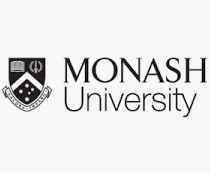

Claire's Resume
Summary
Hi there!
My name is Claire and I am an undergraduate student at Monash University studying a double degree in Engineering and IT.
Previously, I studied at the University of Melbourne under the Bachelor of Science program with a focus on programming,
mathematics and economics. I hope to leverage the skills that I have learnt and innovate new things that will help others!
Education

Monash University
2025 - present
Bachelor of Engineering (Honours)/Bachelor of IT
University of Melbourne
2024 - 2024
Bachelor of Science
Suzanne Cory High School
2021 - 2023
High School Diploma
Work Experience
Chess Instructor - Northern Star Chess
2024 - present
Serving as a chess coach for beginner to advanced classes across multiple primary schools
VCE English Tutor - QS School Group
2024 - 2024
Conducting classes and providing comprehensive feedback to VCE English students
Private Tutor
2021 - present
Offering private tuition for VCE Mathematical Methods, selective entry school preparation and IELTS examinations
Skills
- Communication
- Time Management
- Responsibility
- Literacy
- Numeracy
- Programming
Projects
Website Maintenance - Cambridge International College (CIC)
Offered technical support to help users navigate and familiarise themselves with the new platform and enhanced the website by modifying the frontend code to incorporate new features:
- Creating a dropdown menu for user selection
- Incorporating a delete button with a confirmation reminder that erases records from both the user interface and the database
- Added columns to a report on the user interface, making it downloadable in a CSV file
System and Website Migration - Cambridge International College (CIC)
Offered technical support to migrate the Cambridge International College (CIC) Student Information System from the old website to a new platform:
- Conducted a complete backup of the existing database from the old website and restored it to a new Amazon Lightsail instance
- Configured the Windows server environment to host the website by setting up necessary security protocols and firewall settings
- Established database connections for the new website with SQL Configuration Manager, creating user roles, assigning permissions and enabling logins for user access
Awards and Achievements
University of Melbourne
- 1st place Jane Street Mystery Planet Puzzle competition
- Top 5% of Calculus 2 Semester 2 cohort
- Top 10% of Linear Algebra Semester 1 cohort
- Offered mentoring opportunity for Linear Algebra and Calculus 2 courses
Suzanne Cory High School
- VCE Academic Excellence
- Top 10% of VCE Mathematical Methods cohort
- Extracurricular - Gold Colours
- Sports - Silver Colours
- School Engagement - Silver Colours
Others
- Publications in The London Magazine, Astraea Zine and more
- The 21st Century Emily Dickinson Award
- Silver medal in State Secondary Girls' Chess Competition
- Silver medal for 4x50 Freestyle Relay at the Western Metropolitan Regionals Swim Meet
- Silver medals for the 50m and 100m Backstroke events at the Essendon Aquatics Swim Meet
- Multiple gold, silver and bronze medals at interschool chess competitions